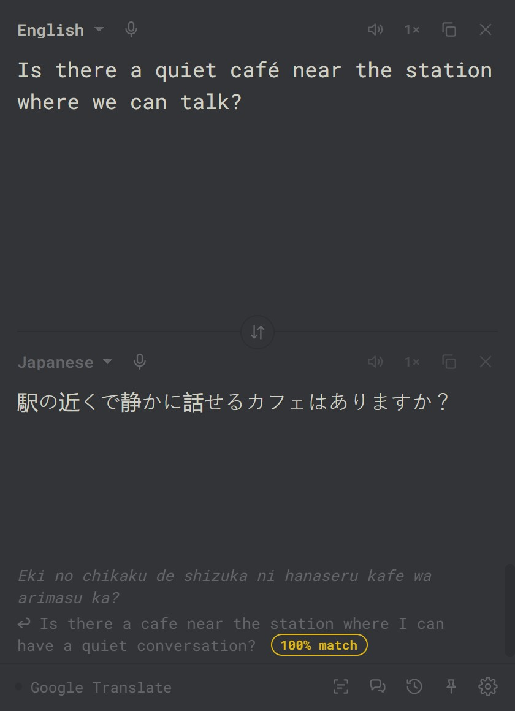
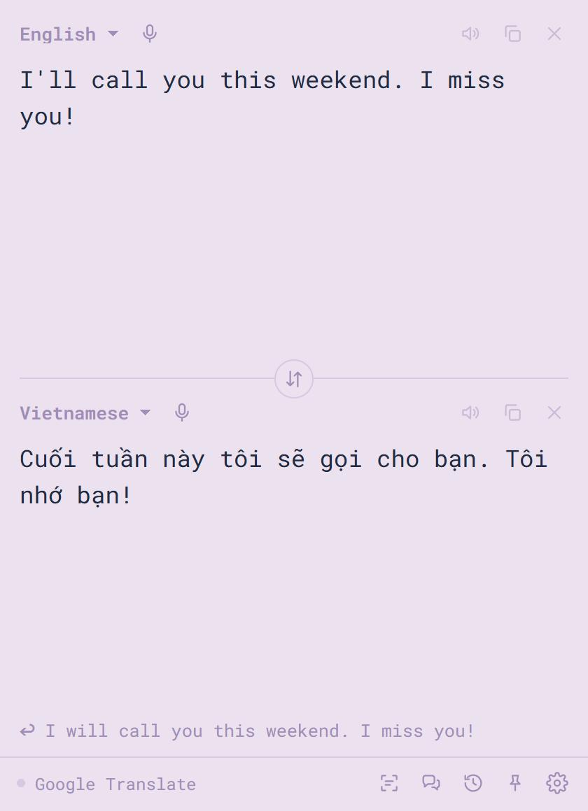

Vox2
a tiny two-way translator for your desktop
Type, paste, speak or snip text in any app and read it, or hear it, in another language. Two boxes, live translation both ways, and a few global shortcuts. A 2 MB download, about 5 MB installed.
Download for Windows
free · open source · source on GitHub


What it does
- Live, both ways. Type in either box and the other translates as you go. Words show grey until the engine settles, then go dark.
- From any app. Select text anywhere and press a shortcut; the translation appears in a small bubble by your cursor.
- Snip & translate. Draw a box around text on screen (images, video subtitles, apps that block copying) and read it in your language.
- Dictation. Tap or hold a key and talk. Speech is transcribed on your machine, and can be typed straight into the app you're using.
- Read aloud. Natural male and female voices in about 75 languages. Each word lights up as it is spoken; slow, normal or fast.
- Conversation mode. Two people take turns talking; each phrase is translated and spoken to the other person.
- Engines. Google Translate (free), or Claude, ChatGPT or Gemini with your own API key, with tone and "who it's for" so pronouns come out right.
- Back-translation with a match score. See your translation turned back into your language, scored by how much of your meaning survived. It compares meaning, not exact words, on your computer. How it works.
- Small things. Detect language, pinned languages, pronunciation for non-Latin scripts, 30-item history, always on top, 37 themes.
Shortcuts
| Ctrl Shift Space | show or hide Vox2, ready to type |
| Ctrl Alt T | translate the selected text in any app |
| Ctrl Alt S | snip an area of the screen and translate it |
| Right Ctrl | dictate: tap to start, or hold to talk |
| Ctrl P | pin on top (while Vox2 is in front) |
All of them can be changed in settings.
Install
- Download
Vox2-setup.exeand run it. It installs for your user only; no admin needed. - Windows will say "unknown publisher" because the installer isn't code-signed. Choose More info → Run anyway.
- Vox2 updates itself from GitHub releases. You can switch that to "ask me" or off in settings.
Windows 10/11, 64-bit. A macOS build is possible from the same code but not published yet.
How it works
- Shell: Tauri 2. A small Rust binary hosts the UI in the system web view (WebView2 on Windows), so there's no bundled browser.
- UI: plain HTML, CSS and JavaScript. No framework, no build step.
- Native side (Rust): a global keyboard hook (
rdev) for the shortcuts, simulated input (enigo) to copy selections and type dictation into other apps, screen capture (xcap), the tray, and signed self-updates. - Speech to text: OpenAI's Whisper model running locally through transformers.js and ONNX Runtime, on the GPU via WebGPU when available. The model downloads once (41–250 MB) and is released from memory when idle.
- Screen text: Tesseract.js, also local; language data is fetched on first use.
- Voices: Microsoft's neural voices (the ones Edge's Read Aloud uses), or OpenAI's, or the system's.
- Translation: Google Translate's public web endpoint, or the Anthropic, OpenAI and Gemini APIs, called directly from your machine.
Privacy
- No account, no server of ours, no analytics.
- Text goes only to the translation engine you pick. Your voice and screen snips are processed on your computer.
- Settings and history are stored locally in your user folder. API keys are locked in Windows Credential Manager (the Keychain on Mac), not in a settings file.
- The free Google Translate and Microsoft voice services are unofficial endpoints and could stop working; the API engines are the official route.
Build from source
git clone https://github.com/chrisqtruong/vox2 cd vox2 cargo install tauri-cli --version "^2" --locked cargo tauri build
Needs Rust and, on Windows, the Visual Studio C++ build tools. The UI lives in resources/, the native code in src-tauri/src/.